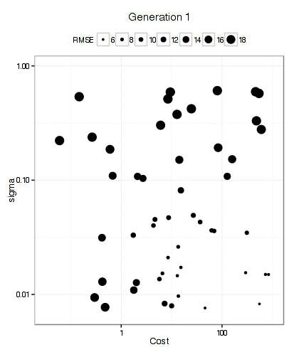

In Search Of…
Rafael Ladeira asked on github:
I was wondering why it doesn’t implement some others algorithms for search for optimal tuning parameters. What would be the caveats of using a [genetic algorithm]http://topepo.github.io/caret/training.html#builtin , for instance, instead of grid or random search? Do you think using some of those powerful optimization algorithms for tuning parameters is a good idea?
You can read the relatively short discussion yourself. It seems clear that nonlinear programming methods have great potential to find better tuning parameter values. However, there are some nontrivial considerations:
- How can your estimate the fitness value efficiently? If you have a ton of data, a single holdout would not be a bad choice for evaluating whatever metric you have chosen to measure performance (e.g. RMSE, accuracy, etc). If not, resampling is most likely the answer and that might not be very efficient. Direct search methods like genetic algorithms (GA), Nelder-Mead and others can require a lot of function evaluations and that can take a while when combined with resampling. Other metrics (i.e. AIC, adjusted R 2 ) could be used but rely on specifying the number of model parameters and that can be unknown (or greater than the sample size).
- If you are going to evaluate the same data set a large number of times, even with resampling, there is great potential for overfitting.
- You probably don’t want to reply on some convergence criteria and, instead, use a fixed number of iterations and use the best solution found during the search. Many models have performance curves that plateau or are very broad. This will lead to convergence issues.
Let’s run a test and see if there is any benefit for an example data set. The caret function SLC14_1 simulates a system from Sapp et al. (2014). All informative predictors are independent Gaussian random variables with mean zero and a variance of 9. The prediction equation is:
x_1 + sin(x_2) + log(abs(x_3)) + x_4^2 + x_5*x_6 +
I(x_7*x_8*x_9 < 0) + I(x_10 > 0) + x_11*I(x_11 > 0) +
sqrt(abs(x_12)) + cos(x_13) + 2*x_14 + abs(x_15) +
I(x_16 < -1) + x_17*I(x_17 < -1) - 2 * x_18 - x_19*x_20The random error here is also Gaussian with mean zero and a variance of 9. I simulated 500 samples for a training set and use a large number (105) as a test set.
library(caret)
library(GA)
library(kernlab)
library(pROC)
library(gbm)
set.seed(17516)
training_data <- SLC14_1(500)
testing_data <- SLC14_1(10^5)Let’s evaluate a support vector machine and a boosted tree on these data using:
- basic grid search. For the SVM model, we estimate the sigma parameter once using
kernlab’ssigestfunction and use a grid of 10 cost values. For GBM, we tune over 1800 combinations of the the four parameters in the default model code (but only 60 models are actually fit). - random search: here I matched the number of parameter combinations to the number of models fit using grid search (10 for SVM and 60 for GBM).
- a genetic algorithm with a population size of 50, 12 generations, elitism of two (meaning the two best solutions are carried forward from a generation), cross-over rate of 0.1.
To measure performance, basic 10-fold CV was used. The same CV folds were used for grid search, random search, and the final model determined by the GA. However, during the genetic algorithm, random CV folds are used.
[Here is the code][6] to create the data and run all of the models.
The fitness functions takes the parameter combination as an argument and estimate the RMSE using 10-fold CV. The GA package assumes that you want to maximize the outcome, so we return the negative of the RMSE:
svm_fit <- function(x) {
mod <- train(y ~ ., data = training_data,
method = "svmRadial",
preProc = c("center", "scale"),
trControl = trainControl(method = "cv"),
tuneGrid = data.frame(C = 2^x[1], sigma = exp(x[2])))
-getTrainPerf(mod)[, "TrainRMSE"]
}
gbm_fit <- function(x) {
mod <- train(y ~ ., data = training_data,
method = "gbm",
trControl = trainControl(method = "cv", number = 10),
tuneGrid = data.frame(n.trees = floor(x[1])+1,
interaction.depth = floor(x[2])+1,
shrinkage = x[3],
n.minobsinnode = floor(x[4])+1),
verbose = FALSE)
-getTrainPerf(mod)[, "TrainRMSE"]
}Now, to run the GA’s:
svm_ga_obj <- ga(type = "real-valued",
fitness = svm_fit,
min = c(-5, -5),
max = c(10, 0),
popSize = 50,
maxiter = 12,
seed = 16478,
keepBest = TRUE,
monitor = NULL,
elitism = 2)
gbm_ga_obj <- ga(type = "real-valued",
fitness = gbm_fit,
min = c( 1, 1, 0.0, 5),
max = c(5000, 11, 0.2, 25),
popSize = 50,
maxiter = 12,
seed = 513,
keepBest = TRUE,
monitor = NULL) These can be run in parallel at multiple values but, to compare apples-to-apples, I ran everything without parallel processing.
The code file linked above provides all of the code for each search type.
SVM Results
For the SVM, this plot below shows that the GA focuses in fairly quickly on an area of interest. The x- and y-axes are the tuning parameters and the size of the point is the RMSE (smaller is better).

It has more trouble deciding on a cost value than on a value for the RBF kernel parameter. The final solution used a sigma value of 0.008977 and a cost of 83.71 and used 10 * 50 * 12 = 6000 model fits to get there.
Below is a plot of the resampled CV for each unique solution. The color of the points corresponds to the generation and the ordering of the point within a generation is arbitrary. There is an overall decrease in the average RMSE (the blue line) but the best solution doesn’t change that often between generations (the black line). My experience with GA’s is that they can run for quite a long time before finding a new best solution.
Here is a plot of the grid search results:
Note the plateau after cost values of 10 and above. This indicates why the GA had more issues with focusing in on a good cost value since the solutions were virtually the same. The grid search chose a sigma value of 0.029 and a cost of 16 using a total of 100 model fits.
Random search had these results:
It finalized on sigma = 0.021 and a cost of 121 also using a total of 100 model fits.
I’ll contrast the test set results at the end. In terms of execution time, the GA took 128-fold longer to run compared to grid search and 137-fold longer than random search.
GBM Results
Here is a plot of the path that the GA took through the GBM tuning parameters (RMSE is not shown here).
There were 6000 model fits here too and the final parameters were: n.trees = 3270, interaction.depth = 5, shrinkage = 0.0689, and n.minobsinnode = 9.
The relationship between resampled RMSE and the individual model fits is:
The last five generations did not produce an optimal combination.
Using grid search, the patterns between the parameters and the resampled RMSE were:
Using the “submodel trick” we evaluated 1600 tuning parameter combinations but only fit 600 models over all of the resamples. The optimal values were n.trees = 3000, interaction.depth = 3, shrinkage = 0.1, and n.minobsinnode = 10.
Random search yield optimal settings of n.trees = 2202, interaction.depth = 3, shrinkage = 0.02651, and n.minobsinnode = 9 also using 600 model fits for tuning.
Time-wise, the GBM GA took 8.46-fold longer to run compared to grid search and 9.95-fold longer than random search.
Test Set Results
Here are the results:
## RMSE Rsquared
## svm_ga 6.055410 0.9239437
## svm_grid 8.977140 0.8550142
## svm_random 7.877201 0.8853781
## gbm_ga 11.178473 0.7242996
## gbm_grid 11.223867 0.7145263
## gbm_random 11.130803 0.7253648For one of the models, it was worth the trouble and time but not for the other. It is certainly possible that a larger number of random search tests would have achieved the same results and I think that I would put my effort there before using a GA to optimize. However, if I really need stellar performance, the GA is worth doing; the only cost is CPU cycles and that is usually limited by our patience.
Is this worth putting into caret? Probably but it is the kind of thing that would take some effort (and minor changes) to make it work across all different models. For example, self organizing maps have tuning parameters for the size of the two dimensions as well as the topology type (which is categorical). It doesn’t make sense to evaluate networks with dimensions (3, 4) and also try (4, 3) since they are basically the same model. Also, encoding the categorical tuning parameters are not impossible but it might be tricky to do in an automated way. This would take some thought and, in the meantime, the code shown above works pretty well.
(This article was originally posted at http://appliedpredictivemodeling.com)